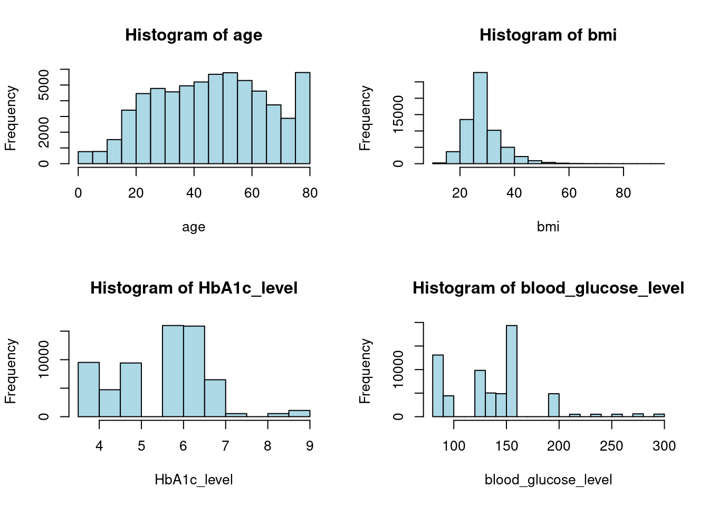
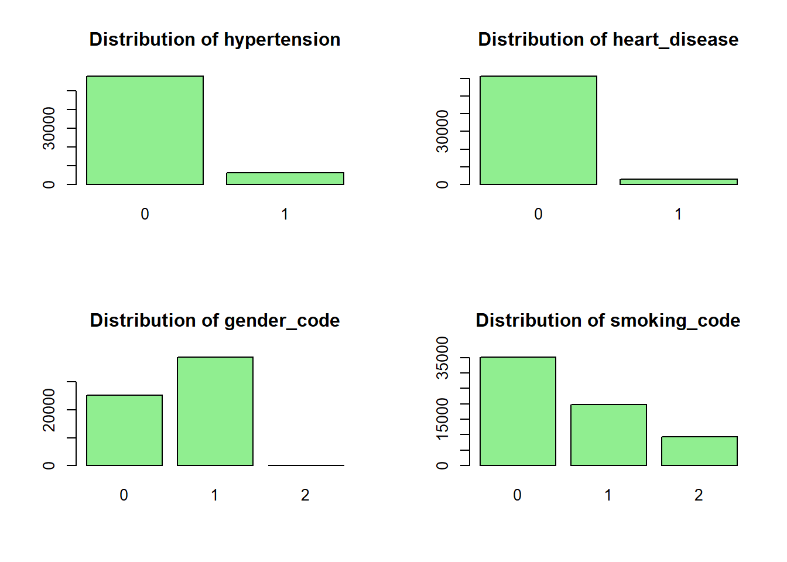
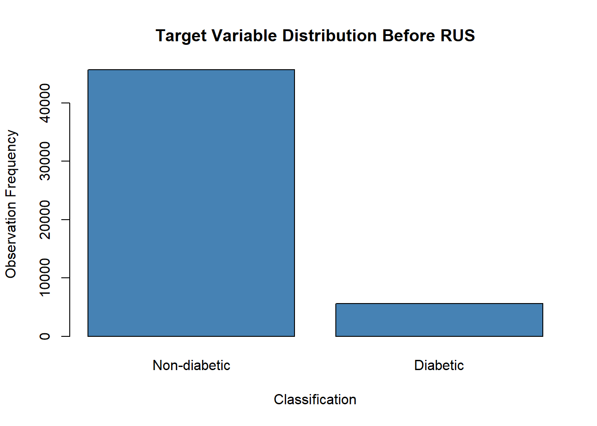
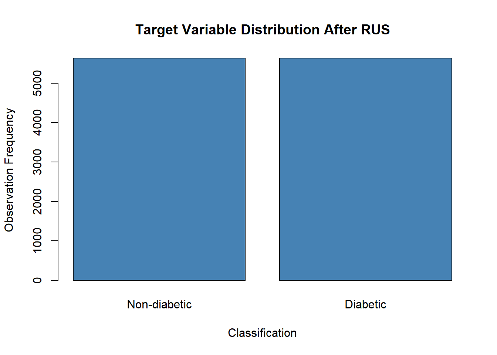

library(data.table)
raw_df <- fread("../data/diabetes_prediction_dataset.csv")Supervised Classification of Diabetes Data
Introduction
The data used to perform this study was obtained from an open-access Kaggle data repository. The link to the data repository is:
https://www.kaggle.com/datasets/iammustafatz/diabetes-prediction-dataset
The primary objective of this study is to perform a binary classification task with logistic regression, identifying diabetic from non-diabetic observations. Second to this would be examining the effect of two different resampling approaches: (i) oversampling with Random Oversampling and (ii) undersampling with Random Undersampling, to the performance of the model.
Data Pre-processing
To yield a performant model, it’s imperative for our input data to be clean. This involves pruning observations from the original data file, scaling values, and the appropriate value conversions, among other appropriate steps that may arise.
On a high level, what is done in this subsection are the following:
- Loading the dataset into R studio.
- Null checks.
- Encoding.
Loading Data
In this step the diabetes_prediction_dataset.csv file is stored into a table.
After this, the head and tail of the loaded dataframe was inspected to see if the file was read into the environment.
Head
head(raw_df) gender age hypertension heart_disease smoking_history bmi HbA1c_level
<char> <num> <int> <int> <char> <num> <num>
1: Female 80 0 1 never 25.19 6.6
2: Female 54 0 0 No Info 27.32 6.6
3: Male 28 0 0 never 27.32 5.7
4: Female 36 0 0 current 23.45 5.0
5: Male 76 1 1 current 20.14 4.8
6: Female 20 0 0 never 27.32 6.6
blood_glucose_level diabetes
<int> <int>
1: 140 0
2: 80 0
3: 158 0
4: 155 0
5: 155 0
6: 85 0Tail
tail(raw_df) gender age hypertension heart_disease smoking_history bmi HbA1c_level
<char> <num> <int> <int> <char> <num> <num>
1: Female 36 0 0 No Info 24.60 4.8
2: Female 80 0 0 No Info 27.32 6.2
3: Female 2 0 0 No Info 17.37 6.5
4: Male 66 0 0 former 27.83 5.7
5: Female 24 0 0 never 35.42 4.0
6: Female 57 0 0 current 22.43 6.6
blood_glucose_level diabetes
<int> <int>
1: 145 0
2: 90 0
3: 100 0
4: 155 0
5: 100 0
6: 90 0Removing Nulls
Before further pre-processing steps (scaling, value conversion etc.), observations that aren’t complete will be removed. Essentially rows with missing data are to be discarded from the considered dataset.
Counting Nulls / Attribute
colnames(raw_df)[1] "gender" "age" "hypertension"
[4] "heart_disease" "smoking_history" "bmi"
[7] "HbA1c_level" "blood_glucose_level" "diabetes" From this cell it can be gathered that there are 9 attributes all in all. From the whole dataset with respect to each of these attributes, we count the amount of nulls.
null_counts <- raw_df[, lapply(.SD, function(x) sum(is.na(x) | trimws(x) == ""))]
null_counts gender age hypertension heart_disease smoking_history bmi HbA1c_level
<int> <int> <int> <int> <int> <int> <int>
1: 0 0 0 0 0 0 0
blood_glucose_level diabetes
<int> <int>
1: 0 0The result of the previous cell shows that all rows have complete data.
Type Conversions
Part of data pre-processing is also ensuring that observations are stored in programmatically convenient formats. In the context of R an example of this would be storing categorical data as factors.
str(raw_df) can be used to inspect how these values are stored in the table.
str(raw_df)Classes 'data.table' and 'data.frame': 100000 obs. of 9 variables:
$ gender : chr "Female" "Female" "Male" "Female" ...
$ age : num 80 54 28 36 76 20 44 79 42 32 ...
$ hypertension : int 0 0 0 0 1 0 0 0 0 0 ...
$ heart_disease : int 1 0 0 0 1 0 0 0 0 0 ...
$ smoking_history : chr "never" "No Info" "never" "current" ...
$ bmi : num 25.2 27.3 27.3 23.4 20.1 ...
$ HbA1c_level : num 6.6 6.6 5.7 5 4.8 6.6 6.5 5.7 4.8 5 ...
$ blood_glucose_level: int 140 80 158 155 155 85 200 85 145 100 ...
$ diabetes : int 0 0 0 0 0 0 1 0 0 0 ...
- attr(*, ".internal.selfref")=<externalptr> The previous query showed that the following attributes: (i) gender, (ii) hypertension, (iii) heart_disease, (iv) smoking_history, and (v) diabetes, are categorical. However, the attribute smoking_history seems to have more than just 2 possible values.
To be sure, an inspection of all unique values in these attributes ascertains whether or not the value is binary or not.
categorical_attr <- c("gender", "hypertension", "heart_disease", "smoking_history", "diabetes")
unique_vals <- lapply(raw_df[, ..categorical_attr], unique)
print(unique_vals)$gender
[1] "Female" "Male" "Other"
$hypertension
[1] 0 1
$heart_disease
[1] 1 0
$smoking_history
[1] "never" "No Info" "current" "former" "ever"
[6] "not current"
$diabetes
[1] 0 1It can be seen that the attributes: hypertension, heart_disease, and diabetes, already only have two possible values; gender and smoking_history however do not.
Handling gender Attribute
Surface level research shows that individuals with non-binary gender identities show higher incidence rates for other diabetes related comorbidities, e.g. smoking (Tan et. al. 2021). This suggests that gender identities beyond just male and female may provide the model with sufficient information, along with other features, for classification.
| gender | description | encoding |
|---|---|---|
| Male | Individual whose sex is Male | 0 |
| Female | Individual whose sex is Female | 1 |
| Other | Individual with non-binary gender identity | 2 |
These encodings serve only to be labels that are programmatically convenient to work with in processing.
gender_encodings = c(
"Male" = 0,
"Female" = 1,
"Other" = 2
)
raw_df[, gender_code := gender_encodings[gender]]
print(raw_df) gender age hypertension heart_disease smoking_history bmi
<char> <num> <int> <int> <char> <num>
1: Female 80 0 1 never 25.19
2: Female 54 0 0 No Info 27.32
3: Male 28 0 0 never 27.32
4: Female 36 0 0 current 23.45
5: Male 76 1 1 current 20.14
---
99996: Female 80 0 0 No Info 27.32
99997: Female 2 0 0 No Info 17.37
99998: Male 66 0 0 former 27.83
99999: Female 24 0 0 never 35.42
100000: Female 57 0 0 current 22.43
HbA1c_level blood_glucose_level diabetes gender_code
<num> <int> <int> <num>
1: 6.6 140 0 1
2: 6.6 80 0 1
3: 5.7 158 0 0
4: 5.0 155 0 1
5: 4.8 155 0 0
---
99996: 6.2 90 0 1
99997: 6.5 100 0 1
99998: 5.7 155 0 0
99999: 4.0 100 0 1
100000: 6.6 90 0 1It can be seen that gender has been successfully encoded into gender_code. As such, the original column can now be discarded.
raw_df[, gender := NULL]
print(raw_df) age hypertension heart_disease smoking_history bmi HbA1c_level
<num> <int> <int> <char> <num> <num>
1: 80 0 1 never 25.19 6.6
2: 54 0 0 No Info 27.32 6.6
3: 28 0 0 never 27.32 5.7
4: 36 0 0 current 23.45 5.0
5: 76 1 1 current 20.14 4.8
---
99996: 80 0 0 No Info 27.32 6.2
99997: 2 0 0 No Info 17.37 6.5
99998: 66 0 0 former 27.83 5.7
99999: 24 0 0 never 35.42 4.0
100000: 57 0 0 current 22.43 6.6
blood_glucose_level diabetes gender_code
<int> <int> <num>
1: 140 0 1
2: 80 0 1
3: 158 0 0
4: 155 0 1
5: 155 0 0
---
99996: 90 0 1
99997: 100 0 1
99998: 155 0 0
99999: 100 0 1
100000: 90 0 1Handling smoking_history Attribute
The earlier cell that was supposed to detect and count for null values was not able to catch smoking_history observations marked with No Info. That was because the previous function looked for values stored in R as NA or as empty strings. Including these observations may just be noise for the classifier, as such observations with No Info in smoking_history are discarded.
row_count_before <- raw_df[, .N] # row count before drop
print(paste("Row count before drop: ", row_count_before))[1] "Row count before drop: 100000"raw_df <- raw_df[!(smoking_history == "No Info")]
unique(raw_df$smoking_history)[1] "never" "current" "former" "ever" "not current"row_count_after <- raw_df[, .N] # row count after drop
print(paste("Row count after drop: ", row_count_after))[1] "Row count after drop: 64184"To turn the remaining string values into meaningful numerical data, ordinal encoding comes to mind. Notice how the magnitude of smoking_history can be surmised from the current values; those who have never smoked have, by definition, smoked less than those who were former smokers. Through the same intuition, it can be said that current smokers smoke the most. Formal definitions for these terms can be obtained from online medical sources.
From this information these encodings were generated:
| smoking_history | description | encoding |
|---|---|---|
| never | never smoked before, or has smoked less than 100 cigarettes in their lifetime | 0 |
| former | smoked at least 100 cigarettes in their lifetime but does not currently smoke | 1 |
| not current | smoked at least 100 cigarettes in their lifetime but does not currently smoke | 1 |
| ever | term encompassing both current and former smokers, anyone who has smoked at least 100 cigarettes in their lifetime | 1 |
| current | smoked at least 100 cigarettes in their lifetime and currently smokes | 2 |
It must be noted that in the context of this project, the terms former, ever, and not current, were not defined in the data card. As such, operative definitions were gleaned from the CDC QuickStats article hyperlinked above.
smoking_encodings <- c(
"never" = 0,
"former" = 1,
"not current" = 1,
"ever" = 1,
"current" = 2
)
raw_df[, smoking_code := smoking_encodings[smoking_history]]
print(raw_df) age hypertension heart_disease smoking_history bmi HbA1c_level
<num> <int> <int> <char> <num> <num>
1: 80 0 1 never 25.19 6.6
2: 28 0 0 never 27.32 5.7
3: 36 0 0 current 23.45 5.0
4: 76 1 1 current 20.14 4.8
5: 20 0 0 never 27.32 6.6
---
64180: 26 0 0 never 34.34 6.5
64181: 40 0 0 never 40.69 3.5
64182: 66 0 0 former 27.83 5.7
64183: 24 0 0 never 35.42 4.0
64184: 57 0 0 current 22.43 6.6
blood_glucose_level diabetes gender_code smoking_code
<int> <int> <num> <num>
1: 140 0 1 0
2: 158 0 0 0
3: 155 0 1 2
4: 155 0 0 2
5: 85 0 1 0
---
64180: 160 0 1 0
64181: 155 0 1 0
64182: 155 0 0 1
64183: 100 0 1 0
64184: 90 0 1 2It can be seen that smoking_history has been encoded successfully into the column smoking_code; the old column can now be safely discarded.
raw_df[, smoking_history := NULL]
print(raw_df) age hypertension heart_disease bmi HbA1c_level blood_glucose_level
<num> <int> <int> <num> <num> <int>
1: 80 0 1 25.19 6.6 140
2: 28 0 0 27.32 5.7 158
3: 36 0 0 23.45 5.0 155
4: 76 1 1 20.14 4.8 155
5: 20 0 0 27.32 6.6 85
---
64180: 26 0 0 34.34 6.5 160
64181: 40 0 0 40.69 3.5 155
64182: 66 0 0 27.83 5.7 155
64183: 24 0 0 35.42 4.0 100
64184: 57 0 0 22.43 6.6 90
diabetes gender_code smoking_code
<int> <num> <num>
1: 0 1 0
2: 0 0 0
3: 0 1 2
4: 0 0 2
5: 0 1 0
---
64180: 0 1 0
64181: 0 1 0
64182: 0 0 1
64183: 0 1 0
64184: 0 1 2Now that the data is clean, categorical columns can now be converted to the factor data type.
categorical_attr2 <- c("gender_code", "hypertension", "heart_disease", "smoking_code", "diabetes")
raw_df[, (categorical_attr2) := lapply(.SD, as.factor), .SDcols = categorical_attr2]
# verify changes
str(raw_df)Classes 'data.table' and 'data.frame': 64184 obs. of 9 variables:
$ age : num 80 28 36 76 20 44 42 32 53 54 ...
$ hypertension : Factor w/ 2 levels "0","1": 1 1 1 2 1 1 1 1 1 1 ...
$ heart_disease : Factor w/ 2 levels "0","1": 2 1 1 2 1 1 1 1 1 1 ...
$ bmi : num 25.2 27.3 23.4 20.1 27.3 ...
$ HbA1c_level : num 6.6 5.7 5 4.8 6.6 6.5 4.8 5 6.1 6 ...
$ blood_glucose_level: int 140 158 155 155 85 200 145 100 85 100 ...
$ diabetes : Factor w/ 2 levels "0","1": 1 1 1 1 1 2 1 1 1 1 ...
$ gender_code : Factor w/ 3 levels "0","1","2": 2 1 2 1 2 2 1 2 2 2 ...
$ smoking_code : Factor w/ 3 levels "0","1","2": 1 1 3 3 1 1 1 1 1 2 ...
- attr(*, ".internal.selfref")=<externalptr> Exploratory Data Analysis
The goal in exploratory data analysis is discovering correlations and distributions across all attributes. This is important as in this project, it serves as the main guide for feature selection.
Excluding the target, the current cleaned table has 8 attributes of which 4 are categorical (hypertension, heart_disease, gender_code, and smoking_code) and the other 4 (age, bmi, HbA1c_level, blood_glucose_level) are continuous.
Analyzing Target Distribution
One of the biggest hurdles in classification tasks is class imbalance in the data; when there are more observations for a certain dependent variable than others then there is a class imbalance. In the context of the project the dependent variable is the diabetes attribute.
counts <- table(raw_df$diabetes)
barplot(
counts,
names.arg = c("Non-diabetic", "Diabetic"),
col = "steelblue",
main = "Target Variable Distribution",
xlab = "Classification",
ylab = "Observation Frequency")
Visually it can be seen that the data is greatly imbalanced.
Examination of Continuous Attributes
For this subsection we consider the continuous attributes of the dataset and how they relate to the target variable.
continuous_attr <- c("age", "bmi", "HbA1c_level", "blood_glucose_level")
continuous_attr_histdata <- raw_df[, ..continuous_attr]
par(mfrow = c(2, 2))
for (attr in continuous_attr) {
hist(continuous_attr_histdata[[attr]],
main = paste("Histogram of", attr),
col = "lightblue",
xlab = attr)
}
The correlations of these continuous data attributes is shown in the correlation matrix below:
cor_matrix <- cor(continuous_attr_histdata, use = "complete.obs")
print(cor_matrix) age bmi HbA1c_level blood_glucose_level
age 1.0000000 0.16129432 0.11598992 0.11695472
bmi 0.1612943 1.00000000 0.08487877 0.09484836
HbA1c_level 0.1159899 0.08487877 1.00000000 0.19441839
blood_glucose_level 0.1169547 0.09484836 0.19441839 1.00000000Correlation between these variables seem very weak. No strong linear relationship can be made with any of them with each other. Given that EDA serves as the primary guide of feature selection in the project, it can be inferred that these attributes are not linearly redundant. This justifies the inclusion of all of these attributes into the feature set.
Examination of Categorical Attributes
For this subsection we consider the categorical attributes of the dataset and how they relate to the target variable.
categorical_attr3 <- c("hypertension", "heart_disease", "gender_code", "smoking_code")
categorical_attr_notarg <- raw_df[, ..categorical_attr3]
par(mfrow = c(2,2))
for (attr in categorical_attr3) {
barplot(table(categorical_attr_notarg[[attr]]),
main = paste("Distribution of", attr),
col = "lightgreen")
}
For an analysis of these attributes the chi-square test for independence can be used to see correlation between the attribute and target.
categorical_attr_wtarg <- c(categorical_attr3, "diabetes")
categorical_eda <- raw_df[, ..categorical_attr_wtarg]
# Chi-square test: Hypertension v.s. Diabetes
chisq.test(table(categorical_eda$hypertension, categorical_eda$diabetes))
Pearson's Chi-squared test with Yates' continuity correction
data: table(categorical_eda$hypertension, categorical_eda$diabetes)
X-squared = 2370, df = 1, p-value < 2.2e-16# Chi-square test: Heart Disease v.s. Diabetes
chisq.test(table(categorical_eda$heart_disease, categorical_eda$diabetes))
Pearson's Chi-squared test with Yates' continuity correction
data: table(categorical_eda$heart_disease, categorical_eda$diabetes)
X-squared = 1844.2, df = 1, p-value < 2.2e-16# Chi-square test: Gender v.s. Diabetes
chisq.test(table(categorical_eda$gender_code, categorical_eda$diabetes))Warning in chisq.test(table(categorical_eda$gender_code,
categorical_eda$diabetes)): Chi-squared approximation may be incorrect
Pearson's Chi-squared test
data: table(categorical_eda$gender_code, categorical_eda$diabetes)
X-squared = 209.99, df = 2, p-value < 2.2e-16# Chi-square test: Smoking v.s. Diabetes
chisq.test(table(categorical_eda$smoking_code, categorical_eda$diabetes))
Pearson's Chi-squared test
data: table(categorical_eda$smoking_code, categorical_eda$diabetes)
X-squared = 253.13, df = 2, p-value < 2.2e-16All p-values obtained are very small (p < 2.2e-16) which provides strong evidence to reject the null-hypothesis. For the attributes hypertension, heart_disease, and smoking_code this is to be expected since they are known comorbidities for many diseases. However, gender_code also yielding low p-values suggests that gender (not sex, since non-binary identites are included) is statistically significant when analyzing diabetes distribution.
All that being said, failure to reject the null hypothesis for any of the variables suggests that they should be included to the final feature set.
Modeling
From EDA, through the use of correlation matrix and Chi-square tests, the final feature set was obtained. Continuous variables were not colinear with each other and all categorical variables yielded small p-values, as such all nine features from the base dataset is used in modeling.
In this section logistic regression is run three times: (i) without resampling, (ii) resampling with ROS, and (iii) resampling with RUS. The target data distribution is heavily imbalanced, making the dataset a good candidate for analyzing performance contributions/effects of resampling techniques.
Scaling Continuous Attributes
https://www.geeksforgeeks.org/logistic-regression-and-the-feature-scaling-ensemble/
An inspection of the data’s continuous attributes (e.g. age, bmi, blood_glucose_level) makes apparent the difference in scale that these values have. From a numerical standpoint, measurements in bmi and age are significantly less than measurements in blood_glucose_level.
Feature scaling ensures that all features contribute equally to the model’s learning process. Numerically large features, when not scaled properly, may dominate learning over smaller-scale features; blood_glucose_level may, by virtue of the units it’s measured in, overtake HbA1c_level in contribution because of the difference in their values.
scale performs z-score scaling, centering values around 0.
raw_df$age <- scale(raw_df$age)
raw_df$bmi <- scale(raw_df$bmi)
raw_df$HbA1c_level <- scale(raw_df$HbA1c_level)
raw_df$blood_glucose_level <- scale(raw_df$blood_glucose_level)
head(raw_df[, ..continuous_attr]) age bmi HbA1c_level blood_glucose_level
<num> <num> <num> <num>
1: 1.7121451 -0.4963200 0.9454139 0.008816956
2: -0.9490171 -0.1694423 0.1238857 0.435702151
3: -0.5396076 -0.7633468 -0.5150807 0.364554618
4: 1.5074403 -1.2713117 -0.6976425 0.364554618
5: -1.3584267 -0.1694423 0.9454139 -1.295554474
6: -0.1301980 -1.3986865 0.8541330 1.431767606Logistic Regression without Resampling
In this subsection, logistic regression is performed and evaluated for accuracy without resampling.
for_baseline <- copy(raw_df)Train & Test Set Creation
set.seed("123")
# there are 60k rows so let's try 80-20
split_baseline <- caTools::sample.split(for_baseline$diabetes, SplitRatio = 0.8)
baseline_train_data <- subset(for_baseline, split_baseline == TRUE)
baseline_test_data <- subset(for_baseline, split_baseline == FALSE)Model Training
baseline_model <- glm(diabetes ~ .,
data = baseline_train_data,
family = binomial)
summary(baseline_model)
Call:
glm(formula = diabetes ~ ., family = binomial, data = baseline_train_data)
Coefficients:
Estimate Std. Error z value Pr(>|z|)
(Intercept) -4.56196 0.06150 -74.176 < 2e-16 ***
age 0.92721 0.02885 32.143 < 2e-16 ***
hypertension1 0.72621 0.05672 12.804 < 2e-16 ***
heart_disease1 0.72911 0.07595 9.600 < 2e-16 ***
bmi 0.56807 0.02055 27.638 < 2e-16 ***
HbA1c_level 2.52982 0.04873 51.913 < 2e-16 ***
blood_glucose_level 1.37864 0.02535 54.389 < 2e-16 ***
gender_code1 -0.29150 0.04507 -6.468 9.92e-11 ***
gender_code2 -7.82022 103.65242 -0.075 0.940
smoking_code1 0.02267 0.04891 0.463 0.643
smoking_code2 0.14949 0.06802 2.198 0.028 *
---
Signif. codes: 0 '***' 0.001 '**' 0.01 '*' 0.05 '.' 0.1 ' ' 1
(Dispersion parameter for binomial family taken to be 1)
Null deviance: 35538 on 51346 degrees of freedom
Residual deviance: 14314 on 51336 degrees of freedom
AIC: 14336
Number of Fisher Scoring iterations: 11Making Predictions on baseline_test_data
baseline_test_probs <- predict(baseline_model,
newdata = baseline_test_data,
type = "response")
baseline_test_pred <- ifelse(baseline_test_probs > 0.5, 1, 0)
# report accuracy
mean(baseline_test_pred == baseline_test_data$diabetes)[1] 0.9498325Without any resampling, the probability of an accurate prediction is 94.9%? That’s higher than most people’s final grade in CSCI 21! Recall that the target distribution is greatly imbalanced, this is may be a case of the accuracy paradox where the model correctly makes predictions on the majority class and neglects the minority class.
Confusion Matrix
baseline_confmatrix <- caret::confusionMatrix(
as.factor(baseline_test_data$diabetes),
as.factor(baseline_test_pred)
)
print(baseline_confmatrix)Confusion Matrix and Statistics
Reference
Prediction 0 1
0 11284 144
1 500 909
Accuracy : 0.9498
95% CI : (0.9459, 0.9535)
No Information Rate : 0.918
P-Value [Acc > NIR] : < 2.2e-16
Kappa : 0.7113
Mcnemar's Test P-Value : < 2.2e-16
Sensitivity : 0.9576
Specificity : 0.8632
Pos Pred Value : 0.9874
Neg Pred Value : 0.6451
Prevalence : 0.9180
Detection Rate : 0.8790
Detection Prevalence : 0.8902
Balanced Accuracy : 0.9104
'Positive' Class : 0
The confusion matrix sheds more light on the model’s performance. For cases where the model is tested on diabetic data (the correct prediction is 1), the model does not perform so well. In the second line of the confusion matrix the ratio between false positives and true positives is 500:909.
PPV and NPV values make more apparent the accuracy paradox. The PPV being 98.7% means that when the model makes a 0 prediction (non-diabetic), it is correct 98.7% of the time. In contrast, the NPV being 64.5% means that when the model predicts a 1 prediction (diabetic), it is only correct 64.5% of the time. Given the class imbalance, the model will still get a high accuracy mark if it just predicted all observations to be non-diabetic.
Logistic Regression with Resampling
The previous subsection showed room for improvement with the NPV of the model. One of the main challenges in classification tasks is deciding how to handle class imbalances, one of the ways this is addressed is through resampling. Resampling, makes it so that the proportions in the training data is more balanced, giving the model more exposure to both targets.
The resampling approaches used in this project are: (i) Oversampling with ROS, and (ii) Undersampling with RUS.
Train & Test Set Creation for ROS
for_ROS <- copy(raw_df)
set.seed("123")
split_ROS <- caTools::sample.split(for_ROS$diabetes, SplitRatio = 0.8)
ROS_train_data <- subset(for_ROS, split_ROS == TRUE)
ROS_test_data <- subset(for_ROS, split_ROS == FALSE)ROS Resampling
ROS works by randomly duplicating rows of the minority class, adding these dupes up until both classes have roughly the same number of instances. As such, plotting the training data before and after resampling shows the effect of ROS on the observed class imbalance.
ROS_targcounts <- table(ROS_train_data$diabetes)
barplot(
ROS_targcounts,
names.arg = c("Non-diabetic", "Diabetic"),
col = "steelblue",
main = "Target Variable Distribution Before ROS",
xlab = "Classification",
ylab = "Observation Frequency")
The distribution in the bar graph mirrors the one shown in EDA previously.
ROS_targcounts
0 1
45710 5637 Getting an approximate ratio…
targ_ratio <- 45710 / 5637
targ_ratio[1] 8.108923The majority class outnumbers the minority class by about 8 to 1.
ROS_output <- ROSE::ovun.sample(
diabetes ~ .,
data = ROS_train_data,
method = "over",
N = 2*max(table(ROS_train_data$diabetes))
)
ROS_train_data <- ROS_output$dataThe new target distribution is…
ROS_targcounts2 <- table(ROS_train_data$diabetes)
barplot(
ROS_targcounts2,
names.arg = c("Non-diabetic", "Diabetic"),
col = "steelblue",
main = "Target Variable Distribution After ROS",
xlab = "Classification",
ylab = "Observation Frequency")
Model Training on ROS Data
ROS_model <- glm(diabetes ~ .,
data = ROS_train_data,
family = binomial)
summary(ROS_model)
Call:
glm(formula = diabetes ~ ., family = binomial, data = ROS_train_data)
Coefficients:
Estimate Std. Error z value Pr(>|z|)
(Intercept) -2.39419 0.02835 -84.438 < 2e-16 ***
age 0.99691 0.01464 68.118 < 2e-16 ***
hypertension1 0.77684 0.03194 24.318 < 2e-16 ***
heart_disease1 0.85023 0.04430 19.192 < 2e-16 ***
bmi 0.61553 0.01162 52.976 < 2e-16 ***
HbA1c_level 2.36961 0.02458 96.392 < 2e-16 ***
blood_glucose_level 1.31152 0.01462 89.686 < 2e-16 ***
gender_code1 -0.29364 0.02359 -12.448 < 2e-16 ***
gender_code2 -8.88877 61.74552 -0.144 0.886
smoking_code1 0.03809 0.02576 1.479 0.139
smoking_code2 0.15515 0.03491 4.444 8.81e-06 ***
---
Signif. codes: 0 '***' 0.001 '**' 0.01 '*' 0.05 '.' 0.1 ' ' 1
(Dispersion parameter for binomial family taken to be 1)
Null deviance: 126735 on 91419 degrees of freedom
Residual deviance: 47775 on 91409 degrees of freedom
AIC: 47797
Number of Fisher Scoring iterations: 10Making Predictions on ROS_test_data
ROS_test_probs <- predict(ROS_model,
newdata = ROS_test_data,
type = "response")
ROS_test_pred <- ifelse(ROS_test_probs > 0.5, 1, 0)
mean(ROS_test_pred == ROS_test_data$diabetes)[1] 0.8812807So from a very comfortable A, accuracy has dropped to an almost borderline B+. Have the other performance metrics improved?
ROS Model Confusion Matrix
ROS_confmatrix <- caret::confusionMatrix(
as.factor(ROS_test_data$diabetes),
as.factor(ROS_test_pred)
)
ROS_confmatrixConfusion Matrix and Statistics
Reference
Prediction 0 1
0 10079 1349
1 175 1234
Accuracy : 0.8813
95% CI : (0.8756, 0.8868)
No Information Rate : 0.7988
P-Value [Acc > NIR] : < 2.2e-16
Kappa : 0.555
Mcnemar's Test P-Value : < 2.2e-16
Sensitivity : 0.9829
Specificity : 0.4777
Pos Pred Value : 0.8820
Neg Pred Value : 0.8758
Prevalence : 0.7988
Detection Rate : 0.7852
Detection Prevalence : 0.8902
Balanced Accuracy : 0.7303
'Positive' Class : 0
As expected, there is an increase in the value of NPV. Now that the training data has been resampled appropriately to make diabetic and non-diabetic instances as frequent, the model’s increased exposure to diabetic data, despite just being duplicates, affects the learning process of the model. Is this the best way to train the model though?
Train & Test Set Creation for RUS
for_RUS <- copy(raw_df)
set.seed("123")
split_RUS <- caTools::sample.split(for_RUS$diabetes, SplitRatio = 0.8)
RUS_train_data <- subset(for_RUS, split_RUS == TRUE)
RUS_test_data <- subset(for_RUS, split_RUS == FALSE)
RUS_train_data age hypertension heart_disease bmi HbA1c_level
<num> <fctr> <fctr> <num> <num>
1: 1.7121451 0 1 -0.4963200 0.9454139
2: -0.9490171 0 0 -0.1694423 0.1238857
3: -0.5396076 0 0 -0.7633468 -0.5150807
4: -0.1301980 0 0 -1.3986865 0.8541330
5: -0.2325504 0 0 0.8004482 -0.6976425
---
51343: -1.2048981 0 0 -1.6196742 0.2151666
51344: -1.2560743 0 0 0.1881281 0.3977284
51345: -0.3349028 0 0 1.8823672 -1.8842944
51346: -1.1537219 0 0 1.0736136 -1.4278898
51347: 0.5350926 0 0 -0.9198798 0.9454139
blood_glucose_level diabetes gender_code smoking_code
<num> <fctr> <fctr> <fctr>
1: 0.008816956 0 1 0
2: 0.435702151 0 0 0
3: 0.364554618 0 1 2
4: 1.431767606 1 1 0
5: 0.127396176 0 0 0
---
51343: -0.939816812 0 1 0
51344: -1.414133695 0 0 2
51345: 0.364554618 0 1 0
51346: -0.939816812 0 1 0
51347: -1.176975254 0 1 2RUS Resampling
RUS works in the opposite direction of ROS; whereas previously the minority class was duplicated to match the count of the majority class, here random rows from the majority class is removed to match the count of the minority class. The result is a smaller dataset with fewer total samples.
RUS_targcounts <- table(RUS_train_data$diabetes)
barplot(
RUS_targcounts,
names.arg = c("Non-diabetic", "Diabetic"),
col = "steelblue",
main = "Target Variable Distribution Before RUS",
xlab = "Classification",
ylab = "Observation Frequency")
The majority class outnumbers the minority class by about the same proportions again.
RUS_output <- ROSE::ovun.sample(
diabetes ~ .,
data = RUS_train_data,
method = "under",
N = 2*min(table(RUS_train_data$diabetes))
)
RUS_train_data <- RUS_output$data
head(RUS_train_data) age hypertension heart_disease bmi HbA1c_level
1 -0.5396076 0 0 -0.40424179 -0.6976425
2 -0.8978409 0 0 0.33238394 -0.6976425
3 -0.4884314 0 0 -0.16944234 0.8541330
4 0.7909736 0 0 0.17585097 0.4890094
5 1.1492070 0 0 0.05768393 0.5802903
6 1.7121451 0 0 -1.53680385 -1.8842944
blood_glucose_level diabetes gender_code smoking_code
1 -1.414133695 0 1 0
2 0.127396176 0 1 0
3 0.459417995 0 0 0
4 -0.228341486 0 0 2
5 0.008816956 0 0 1
6 0.483133839 0 1 1How does the distribution change after resampling?
RUS_targcounts2 <- table(RUS_train_data$diabetes)
barplot(
RUS_targcounts2,
names.arg = c("Non-diabetic", "Diabetic"),
col = "steelblue",
main = "Target Variable Distribution After RUS",
xlab = "Classification",
ylab = "Observation Frequency")
Now that the training set has been balanced, it’s time to train the model.
Model Training on RUS Data
RUS_model <- glm(diabetes ~ .,
data = RUS_train_data,
family = binomial)
summary(RUS_model)
Call:
glm(formula = diabetes ~ ., family = binomial, data = RUS_train_data)
Coefficients:
Estimate Std. Error z value Pr(>|z|)
(Intercept) -2.36201 0.07837 -30.140 < 2e-16 ***
age 0.94846 0.04074 23.283 < 2e-16 ***
hypertension1 0.85241 0.09053 9.416 < 2e-16 ***
heart_disease1 0.71612 0.12293 5.825 5.69e-09 ***
bmi 0.56312 0.03210 17.542 < 2e-16 ***
HbA1c_level 2.33316 0.06779 34.416 < 2e-16 ***
blood_glucose_level 1.30293 0.04093 31.830 < 2e-16 ***
gender_code1 -0.29158 0.06610 -4.411 1.03e-05 ***
gender_code2 -8.78195 196.96771 -0.045 0.964
smoking_code1 0.03484 0.07219 0.483 0.629
smoking_code2 0.13265 0.09840 1.348 0.178
---
Signif. codes: 0 '***' 0.001 '**' 0.01 '*' 0.05 '.' 0.1 ' ' 1
(Dispersion parameter for binomial family taken to be 1)
Null deviance: 15629 on 11273 degrees of freedom
Residual deviance: 6056 on 11263 degrees of freedom
AIC: 6078
Number of Fisher Scoring iterations: 10Making Predictions on RUS_test_data
RUS_test_probs <- predict(RUS_model,
newdata = RUS_test_data,
type = "response")
RUS_test_pred <- ifelse(RUS_test_probs > 0.5, 1, 0)
mean(RUS_test_pred == RUS_test_data$diabetes)[1] 0.8829945Accuracy is about the same as the ROS model. Are there any improvements for the other model performance metrics?
RUS Model Confusion Matrix
RUS_confmatrix <- caret::confusionMatrix(
as.factor(RUS_test_data$diabetes),
as.factor(RUS_test_pred)
)
RUS_confmatrixConfusion Matrix and Statistics
Reference
Prediction 0 1
0 10105 1323
1 179 1230
Accuracy : 0.883
95% CI : (0.8773, 0.8885)
No Information Rate : 0.8011
P-Value [Acc > NIR] : < 2.2e-16
Kappa : 0.5584
Mcnemar's Test P-Value : < 2.2e-16
Sensitivity : 0.9826
Specificity : 0.4818
Pos Pred Value : 0.8842
Neg Pred Value : 0.8730
Prevalence : 0.8011
Detection Rate : 0.7872
Detection Prevalence : 0.8902
Balanced Accuracy : 0.7322
'Positive' Class : 0
NPV and PPV seem to be about the same as their ROS counterparts.
Results & Discussion
# show barplot ekekekekIn this project a binary classification task was performed on a public health dataset containing a total of 9 features. A binary target diabetes was chosen to be the target of the binary classification task. Predictors consisted of 4 categorical and 4 continuous variables, all of which through EDA, were shown to be statistically significant with regards to the target variable (continuous attributes were not colinear, categorical attributes all yielded small p-values). The main challenge in performing this task was in accounting for the class imbalance of the target in the dataset, for every instance of the minority class there were about 8 of the majority class. The majority class consisted of non-diabetic observations.
Modeling was done through logistic regression, this was performed three times to see the effect of different resampling approaches: (i) no resampling, (ii) random oversampling, and (iii) random undersampling. The first iteration of modeling yielded the highest accuracy metric of 94.9%, for each prediction the model made on its test set the likelihood of it being correct was 94.9%. A deeper analysis of its performance however showed that while PPV is high, NPV was only 64.5%-the model fails to predict cases where an observation should be diabetic. Given the distribution of the target, if the model predicted non-diabetic for all observations, the accuracy would still be in the 90s.
The next two iterations of modeling applied either RUS or ROS to their training data to remove the class imbalance of the target. In ROS, random minority observations were duplicated until target frequencies balanced out. RUS on the other hand randomly removed instances of the majority class until the target frequencies balanced out. Both models performed similarly on their test sets, a loss of about 7% to accuracy but an increase to 88% in NPV. While these models trained on resampled data only get accurate predictions approximately 88% of the time, they’re able to predict the diabetic case 88% of the time also-a stark increase from the non-resampled’s NPV of 64.5%. Whether or not this is the case that defines the metric for model sensitivity requires input from domain experts.
This project was primarily inspired by the study done by Deina et. al. (2024). It’s a paper that proposed a ML framework for data preparation and model training alongside introducing a novel resampling technique, Instance Hardness Threshold (IHT), and model, Symbolic Regression (SR), to predict medical appointment no-shows. The paper compared performances of KNN, SVM, and SR models alongside different sampling techniques such as RUS, SMOTE, NearMiss - 1, and IHT. Through iterations of cross-validation they found that the combination of SR & IHT outperformed almost every other combination for most performance metrics.
This project’s methodology initially was to compare a suite of oversampling and undersampling techniques to the performance of a KNN model and a logistic regression model. However due to limitations in compute power, made apparent in an attempt to do SMOTE, the project was downsized to just a comparison of no-resampling, ROS, and RUS when paired with logistic regression. Despite this, the project still demonstrates the benefits of resampling especially when dealing with highly imbalanced datasets. Further iterations of this project may look into improving the EDA/feature engineering/feature extraction along with using more models.
References
Excluding the dataset, here is a list of the resources that were consulted in the making of this project:
https://bmchealthservres.biomedcentral.com/articles/10.1186/s12913-023-10418-6
https://www.geeksforgeeks.org/confusion-matrix-in-r/
https://rpubs.com/SameerMathur/LR_GLM_CCDefault
https://www.youtube.com/watch?v=C4N3_XJJ-jU
https://pmc.ncbi.nlm.nih.gov/articles/PMC8529476/#:~:text=Transgender%20and%20gender%2Dexpansive%20(TGE)%20adults%E2%80%94individuals%20who%20have,to%20smoke%20cigarettes%20than%20cisgender%20individuals%20[3].
https://www.cdc.gov/mmwr/volumes/72/wr/mm7210a7.htm